صفحه ۱۶۶
کار کارگاهی
کار با کلاسهای واکنشگرای Bootstrap
در این کارگاه با بهکارگیری کلاسهای بوتاسترپ تغییراتی را در صفحه index.html ایجاد خواهید کرد.
بخش اول استفاده از کلاسهای row-cols : در کارگاه قبل اندازه ستونها توسط کلاس col-sm-3 مشخص شد. این کلاس باعث میشود که در دستگاههای بزرگتر از 576 پیکسل، ستونها در کنار هم نمایش داده شوند و در دستگاههای کوچکتر، بهصورت پشته (stack ) روی هم قرار گیرند.
بوت استرپ دارای کلاس واکنشگرای دیگری با نام row-cols است که امکان تعیین تعداد ستونها (در هر ردیف) را در دستگاههای مختلف فراهم میکند؛ بهگونهای که اندازه ستونها در عنصر row مشخص میشود، نه در عناصر col . جدول زیر نحوۀ استفاده از این دو روش را نمایش میدهد.
روش تعیین اندازه ستون
توضیحات
تعیین اندازۀ ستون در عناصر col
این کد یک سطر (row ) با دو ستون (col-6 ) ایجاد میکند. هر ستون نیمی از پهنای سطر (۶ از ۱۲) را اشغال مینماید.
تعیین اندازه ستون در عناصر row
کلاس row-cols-2 باعث ایجاد 2 ستون در هر سطر میگردد. در کد فوق 4 عنصر col وجود دارد؛ بنابراین دو سطر، هر یک حاوی دو ستون تولید میشود. در صورت افزودن تعداد بیشتری از col ، ستونها به ردیف بعدی منتقل میشوند. Bootstrap بهطور خودکار عرض ستونها را تنظیم میکند؛ بنابراین نیازی به تعیین اندازه دستی برای هر ستون ندارید.
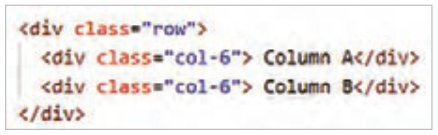
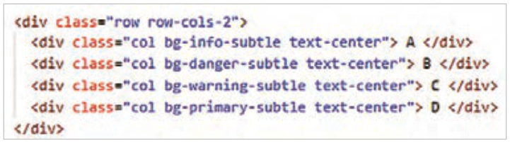
صفحه ۱۶۷
کار کارگاهی (ادامه)
در فایل index.html کدهای زیر را بعد از جدیدترین محصولات اضافه کنید:
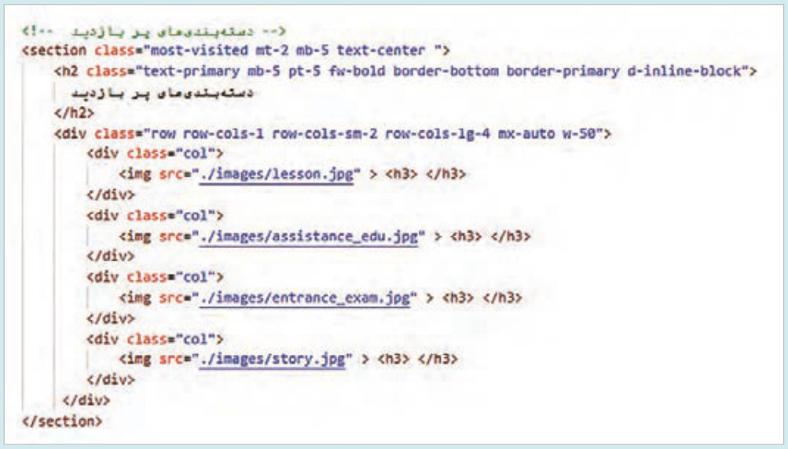
فایل را ذخیره کنید و نتیجه را در مرورگر بررسی کنید. سپس مراحل زیر را انجام دهید و بعد از هر مرحله، نتیجه را مشاهده کنید.
برای تمام تصاویر از کلاسهای border ، border-4 و rounded-circle استفاده کنید تا تصاویر به شکل گرد و دارای خط دور باشند.
برای هر کلاس col کلاس mb-3 را اضافه کنید تا تصاویر در نمای موبایل از تصویر زیرین خود فاصله بگیرند.
برای تنظیم اندازه تصویر، استایل شکل زیر را به فایل styles.css اضافه کنید.
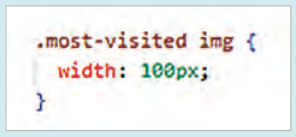
عنوان هر محصول را داخل برچسب<h3> قرار دهید:
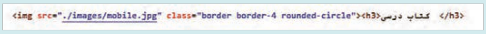
برای تنظیم اندازه متن h3 و فاصله آن از تصویر بالا، استایل شکل زیر را بنویسید:
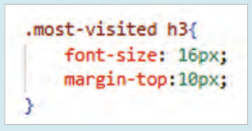
صفحه ۱۶۸
کار کارگاهی (ادامه)
انتظار میرود که بعد از سرانجام مراحل قبل خروجی زیر در نمای دسکتاپ حاصل شود.
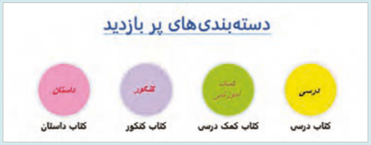
برای مشاهده وضعیت تصاویر در دستگاههای مختلف، کلید f12 را بفشارید. در پاسخ به پنجره پیغام، دکمه Open Dev tools را انتخاب کنید. مطابق تصویر زیر از نوار ابزار بالای صفحه دکمه Toggle Device را انتخاب کنید:
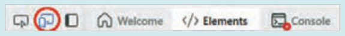
از کشوی Dimension نوع دستگاه را انتخاب کنید و سپس وضعیت تصاویر را مشاهده کنید.
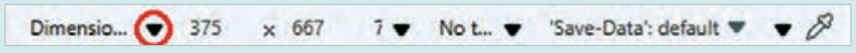
در صورت تمایل گزینه Responsive را از درون کشو انتخاب کنید و سپس با درگ کردن لبه سمت راست دستگاه، پهنای آن را به دلخواه تغییر دهید.
عملکرد کلاسهای row-cols در کارگاه فوق به شرح زیر است:
row-cols-sm-1 : در دستگاههایی با پهنای 576 پیکسل و بیشتر، تصاویر محصولات در 2 ستون نمایش داده میشود.
row-cols-lg-2 : در دستگاههایی با پهنای 992 پیکسل و بیشتر، تصاویر محصولات در 4 ستون نمایش داده میشود.
بخش دوم استفاده از کلاسهای container
کلاسهای container واکنشگرا هستند و پهنای متفاوتی را در دستگاههای مختلف برای عنصر نگهدارنده ایجاد میکنند.
صفحه ۱۶۹
کار کارگاهی (ادامه)
کلاسهای container و پهنای آنها در دستگاههای مختلف
XX-Largepx X-largepx Large px Medium px Small px Extra small <576px
1320px
1140px
960px
720px
540px
100%
.Container
1320px
1140px
960px
720px
540px
100%
.Container-sm
1320px
1140px
960px
720px
100%
100%
.Container-md
1320px
1140px
960px
100%
100%
100%
.Container-lg
1320px
1140px
100%
100%
100%
100%
.Container-xl
1320px
100%
100%
100%
100%
100%
.Container-xxl
100%
100%
100%
100%
100%
100%
.Container-fluid
در کارگاه «طراحی بخش معرفی فروشگاه » پهنای عنصر article در دستگاه دسکتاپ و موبایل به ترتیب 75% و 90% تعیین شد. در اینجا قصد داریم بهجای استفاده از کدهای CSS از کلاسهای واکنشگرای container استفاده کنیم. بدین منظور مراحل زیر را دنبال کنید:
در عنصر article از کلاس container-sm استفاده کنید:
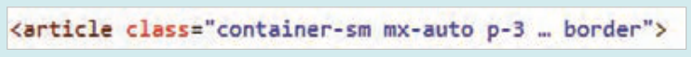
هر دو استایل عنصر article را از فایل styles.css حذف کنید.
فایلهای HTML و CSS را ذخیره کنید و نتیجه را در مرورگر بررسی کنید. با این تغییر، پهنای عنصر article برای دستگاههایی با پهنای صفحه 576 پیکسل و بزرگتر، توسط کلاس container تعیین میشود و برای دستگاههای کوچکتر، پهنای عنصر برابر 100% خواهد بود.
بخش سوم کار با کلاسهای display
در کارگاه «طراحی Toolbar » یک نوار ابزار در بالای صفحه، طراحی شد. گزینههای «ثبت نام|ورود» و لوگوی آن در نمای موبایل مخفی شد و در پایین صفحه درون یک لایه جدید با نام bottom-toolbar قرار گرفت. هدف این کارگاه این است که کنترل نمایش/عدم نمایش عناصر لایههای toolbar و bottom-toolbar به کلاسهای d-* سپرده شود و کدهای CSS مربوط به آنها حذف گردد.
صفحه ۱۷۰
کار کارگاهی (ادامه)
ابتدا کلاس d-flex و d-lg-none را به مجموعه کلاسهای عنصر bottom-toolbar اضافه کنید:
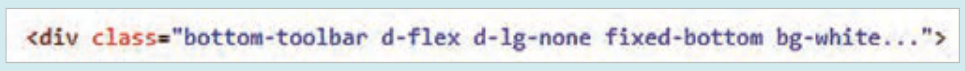
ویژگی display:none را از مجموعه ویژگیهای عنصر .bottom-toolbar در فایل styles.css حذف کنید.
در قانون media ، انتخابگر .bottom-toolbar را حذف کنید. فایل را ذخیره و نتیجه را در مرورگر بررسی کنید.
برای مخفی کردن دو عنصر «ثبت نام|ورود» و لوگو در پهنای کمتر از 992 پیکسل، کلاسهای d-none و d-lg-block را به عناصر signin-signup و logo در عنصر toolbar اضافه کنید:
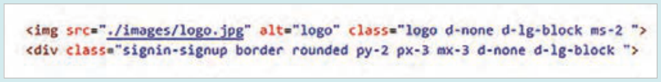
بعد از اضافه کردن کلاسهای d-*، استایل زیر را از قانون media حذف کنید.
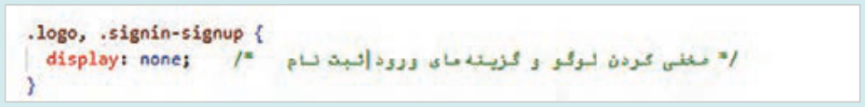
فایل را ذخیره و نتیجه را در مرورگر بررسی کنید. انتظار میرود که در دستگاههای 992 پیکسل و بزرگتر، چهار عنصر لوگو، کادر جستوجو، گزینه «ورود|ثبت نام» و سبد خرید حضور داشته باشند، اما در دستگاههای کوچکتر، دو عنصر لوگو و «ورود|ثبت نام» مخفی شوند.
برای کنترل مقدار فضای اضافی در اطراف عنصر Toolbar ، کلاس p-3 را به عنصر toolbar اختصاص دهید و سپس ویژگی padding را در کلاس toolbar حذف کنید. از کشوی Dimension در مرورگر، گزینۀ Responsive را انتخاب کنید و سپس نتیجۀ کار را بررسی کنید.
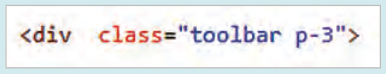
بخش چهارم ایجاد تصویر واکنش گرا
هدف این بخش اضافه کردن یک بنر به بالای عنصر toolbar است، بهطوریکه تصویر بنر نسبت به پهنای صفحه واکنشگرا باشد. برای این کار تصویر top-banner.jpg را در ابتدای برچسب <header> درج کنید و کلاس img-fluid را برای آن استفاده کنید:
<img src="./images/top-banner.gif " class="img-fluid w-100">
کلاس img-fluid یکی از کلاسهای مهم Bootstrap برای واکنشگرا کردن تصاویر است و باعث میشود که تصویر متناسب با اندازۀ والدش تغییر اندازه دهد؛ از عرض container بزرگتر نشود و همچنین در موبایل، تبلت و دسکتاپ درست نمایش داده شود.
صفحه ۱۷۱
کار کارگاهی (ادامه)
البته ایجاد تصویر واکنشگرا به استفاده از کلاس img-fluid خلاصه نمیشود. بهتر است در خصوص تصاویری که تمام پهنا را اشغال میکنند، نسخۀ دیگری از تصویر برای دستگاههای کوچکتر طراحی شود. در مثال زیر سه نسخه از تصویر بنر برای موبایل، تبلت و دسکتاپ استفاده شده است. مرورگر با توجه به پهنای صفحه، تصویر مناسب را برای نمایش انتخاب میکند:
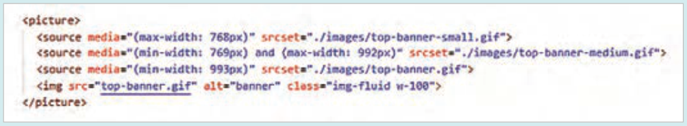
اکثر مرورگرهای مدرن امروزی از برچسب picture پشتیبانی میکنند؛ بنابراین در مرورگرهای مدرن، تصاویری که در برچسبهای <source> تعیین شده است، نمایش داده میشوند. در مرورگرهای قدیمی مانند اینترنت اکسپلورر 11 و قدیمیتر، تصویر پیشفرض ظاهر میشود. در کد شکل بالا، تصویر پیشفرض در برچسب <img> مشخص شده است.
فعالیت
سه تصویر بنر در سه اندازه مختلف، برای نمایش در موبایل، تبلت و دسکتاپ طراحیکنید و کدنویسی نمایش آنها را مطابق با کد فوق انجام دهید. انتظار میرود خروجی به صورت شکل زیر حاصل گردد.
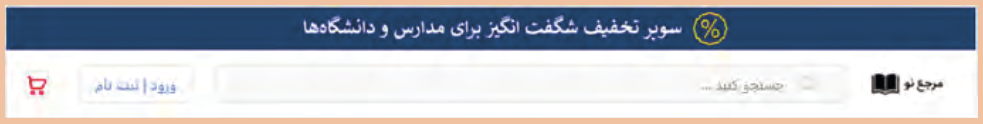
توجه
چنانچه لبههای بنر مماس با لبههای مرورگر نیست، مقدار padding و margin را برای عنصر header برابر صفر قرار دهید.
اجزای رابط کاربری (User Interface Components )
کاربران صفحات وب توسط اجزای مختلفی با صفحه وب تعامل و ارتباط دارند. این اجزا شامل دکمهها، منوها، نوار جستوجو، آیکنها، فرمها، تصاویر، رنگها، فونتها و سایر عناصر بصری هستند که تجربه کاربری را شکل میدهند. بوتاسترپ دارای مجموعهای از کلاسهای آماده برای اجزای رابط کاربری مختلف مانند نوارناوبری، فرم، دکمه، منوی آکاردئون و ... است که در این بخش به آنها پرداخته میشود.
صفحه ۱۷۲
Navbar navbar برای ایجاد نوار ناوبری (Navigation Bar ) یا منوی بالای صفحه استفاده میشود. این کلاس بههمراه کلاسهای دیگری همچون navbar-expand-* برای تعیین رفتار و ظاهر نوار ناوبری در اندازههای مختلف صفحه نمایش به کار میرود. مجموعۀ کلاسهای Navbar به شرح زیر است:
navbar
navbar-expand-*sm ، md ، lg یا xl شود. بهطور مثال استفاده از navbar-expand-sm باعث میشود که نوار ناوبری در دستگاههایی با عرض 576 پیکسل و بیشتر، بهصورت افقی ظاهر شود و در دستگاههای کوچکتر جمع شده و به شکل دکمه همبرگری (☰) نمایش داده شود.
navbar-brand
navbar-nav Navigation list ) در نوار ناوبری استفاده میشود.
nav-link
navbar-toggler
navbar-toggler-icon
navbar-collapse
dropdown
navbar-light و navbar-dark navbar-light موجب ایجاد یک نوار ناوبری با پس زمینه روشن و رنگ متن تیره میگردد و کلاس navbar-dark یک نوار ناوبری با پسزمینۀ تیره و متنهای روشن ایجاد میکند. انتخاب صحیح این کلاسها باعث افزایش خوانایی و بهبود تجربه کاربری میشود.
Page 166
Workshop
Working with Bootstrap's responsive classes
In this workshop you will make changes to the page index.html using Bootstrap classes.
Part 1: using the row-cols classes : in the previous workshop the column sizes were set with the col-sm-3 class. This class shows the columns side by side on devices wider than 576 pixels and stacks them (stack) on smaller devices.
Bootstrap has another responsive class named row-cols that sets the number of columns (in each row) on different devices; the column size is set on the row element, not on the col elements. The table below shows how the two methods are used.
How the column size is set
Description
Setting the column size on the col elements
This code creates a row (row) with two columns (col-6). Each column takes half the width of the row (6 of 12).
Setting the column size on the row element
The row-cols-2 class makes 2 columns in each row. The code above has 4 col elements, so two rows of two columns each are produced. If more col elements are added, the columns move to the next row. Bootstrap sets the column widths automatically, so you do not need to size each column by hand.
Page 167
Workshop (continued)
In the file index.html, add the code below after the newest products:
Save the file and check the result in the browser. Then do the steps below and see the result after each step.
Use the classes border, border-4, and rounded-circle on all the images so that they are round with a border.
Add the mb-3 class to every col so that, in the mobile view, each image has some space from the image below it.
To set the image size, add the style in the figure below to the file styles.css.
Put the title of each product inside an <h3> tag:
To set the size of the h3 text and its distance from the image above it, write the style in the figure below:
Page 168
Workshop (continued)
After finishing the steps above, you should get the output below in the desktop view.
To see how the images look on different devices, press f12. In the message window, choose Open Dev tools. As in the image below, choose the Toggle Device button in the toolbar at the top:
Choose the device type from the Dimension drop-down and look at the images.
If you like, choose Responsive from the drop-down and then change the device width by dragging its right edge.
What the row-cols classes do in the workshop above:
row-cols-sm-1: on devices 576 pixels or wider, the product images are shown in 2 columns.
row-cols-lg-2: on devices 992 pixels or wider, the product images are shown in 4 columns.
Part 2: using the container classes
The container classes are responsive and give the container a different width on different devices.
Page 169
Workshop (continued)
The container classes and their widths on different devices
XX-LargeX-largeLarge
Medium
Small
Extra small<576px
1320px
1140px
960px
720px
540px
100%
.Container
1320px
1140px
960px
720px
540px
100%
.Container-sm
1320px
1140px
960px
720px
100%
100%
.Container-md
1320px
1140px
960px
100%
100%
100%
.Container-lg
1320px
1140px
100%
100%
100%
100%
.Container-xl
1320px
100%
100%
100%
100%
100%
.Container-xxl
100%
100%
100%
100%
100%
100%
.Container-fluid
In the workshop "Designing the shop introduction section ", the width of the article element was set to 75% and 90% on desktop and mobile devices respectively. Here we want to use the responsive container classes instead of CSS code. To do this, follow the steps below:
Use the container-sm class on the article element:
Remove both styles of the article element from the file styles.css.
Save the HTML and CSS files and check the result in the browser. With this change, the width of the article element on devices 576 pixels or wider is set by the container class, and on smaller devices the element is 100% wide.
Part 3: working with the display classes
In the workshop «Designing the toolbar », a toolbar was designed at the top of the page. Its «Sign up|Login» option and logo were hidden in the mobile view and put at the bottom of the page in a new bar named bottom-toolbar. The goal of this workshop is to hand control of showing/hiding the elements of the toolbar and bottom-toolbar bars to the d-* classes and remove their CSS code.
Page 170
Workshop (continued)
First add the classes d-flex and d-lg-none to the classes of the bottom-toolbar element:
Remove display:none from the properties of the .bottom-toolbar element in the file styles.css.
In the media rule, remove the selector .bottom-toolbar. Save the file and check the result in the browser.
To hide the «Sign up|Login» element and the logo at widths below 992 pixels, add the classes d-none and d-lg-block to the signin-signup and logo elements in the toolbar element:
After adding the d-* classes, remove the style below from the media rule.
Save the file and check the result in the browser. On devices 992 pixels or wider you should see four elements, the logo, the search box, the «Login|Sign up» option, and the shopping cart; on smaller devices the logo and «Login|Sign up» should be hidden.
To control the extra space around the toolbar, give the toolbar element the class p-3 and then remove the padding property from the toolbar class. Choose Responsive from the Dimension drop-down in the browser and check the result.
Part 4: creating a responsive image
The goal of this part is to add a banner above the toolbar element so that the banner image responds to the page width. For this, insert the image top-banner.jpg at the start of the <header> tag and use the img-fluid class on it:
<img src="./images/top-banner.gif " class="img-fluid w-100">
img-fluid is one of Bootstrap's important classes for making images responsive: it makes the image resize with its parent, never get wider than the container, and show correctly on phones, tablets, and desktops.
Page 171
Workshop (continued)
Of course, a responsive image is not just a matter of img-fluid. For images that take the full width, it is better to design another version of the image for smaller devices. In the example below, three versions of the banner image are used for phone, tablet, and desktop. The browser picks the right image based on the page width:
Most modern browsers support the picture tag, so in modern browsers the images given in the <source> tags are shown. In old browsers such as Internet Explorer 11 and earlier, the default image appears. In the code above, the default image is given in the <img> tag.
Activity
Design three banner images at three sizes for phone, tablet, and desktop, and code how they are shown like the code above. You should get output like the figure below.
Attention
If the edges of the banner do not touch the edges of the browser, set the padding and margin of the header element to zero.
User Interface Components
Users interact with a web page through different components. These include buttons, menus, search bars, icons, forms, images, colors, fonts, and other visual elements that shape the user experience. Bootstrap has a set of ready-made classes for user interface components such as the navigation bar, forms, buttons, the accordion menu, and so on, which this part covers.
Page 172
Navbar : the navbar class is used to create a navigation bar (Navigation Bar), the menu at the top of the page. It is used with other classes such as navbar-expand-* to set how the navigation bar behaves and looks at different screen sizes. The Navbar classes are:
navbar : the main class for creating a navigation bar.
navbar-expand-*
navbar-brand : used to show the logo or brand name in the navigation bar.
navbar-nav : used to create the navigation list (Navigation list) in the navigation bar.
nav-link : used for the links in the navigation list.
navbar-toggler : used for the small menu button. This button appears in the mobile view so the user can click it to see the menu and click again to close it. (It creates a button that opens and closes the menu.)
navbar-toggler-icon : shows the hamburger icon (☰) on the menu button when collapsed.
navbar-collapse : used to group and hide the menu options on small devices.
dropdown : used to create drop-down menus in the navigation bar.
navbar-light and navbar-dark : used to set the colour of the content of the navigation bar so that the readability of the elements inside it is kept. The class navbar-light creates a navigation bar with a light background and dark text, and the class navbar-dark creates a navigation bar with a dark background and light text. Choosing these classes correctly increases readability and improves the user experience.